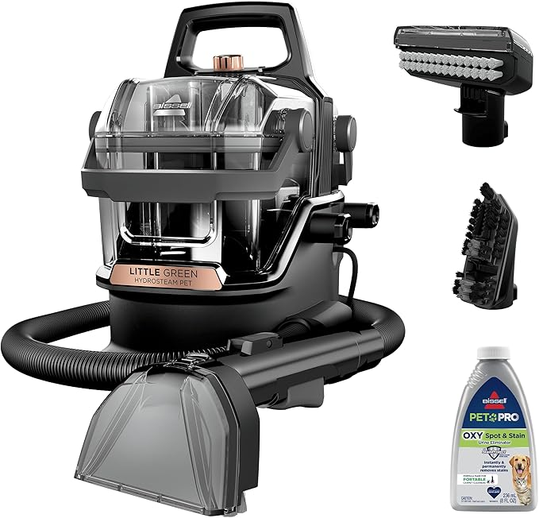

Upholstered Rococo Revival Chair
Purchase Info
This chair was bought by me, Kalyn Morris, on September 19th, 2025 for $4.00 (!!!) from The Dove's Nest at 105 Cotton St, Chester, SC 29706.Skip to Before and After!
Initial Assessments & Dating
- It's hand carved and imbellished and has imperfections all around.
- Parts of it were done in sections and then attached together to form the full back and arms of the chair. The back is in 3 sections. Unusual. But in some American shops of the 1850s–70s, makers did occasionally piece together carved chair backs to save on large hardwood blanks. It was cheaper than carving one large piece, and once stained/finished, the seams weren’t too visible. The rough, almost experimental way the splat is divided suggests a regional maker or smaller workshop, not a high-style urban cabinet shop.
- Wooden inserts/dowels or pegs where the legs meet the seat, instead of nails or screws. Hand-carved- some round, some square. This is a good indicator of pre-1900 construction, because by the early 20th century factories typically used uniform round machine dowels and glue, not irregular pegs.
- No modern fasteners/nails/screws.
- The cushion has tapestry style fabric with upholstery tacks (row-type, not individual unfortunately). All modern inside and out. Foam, etc.
- White paint skids and platters in various places, extensive on the back.
- Typical dirt on the upholstery, but still in impressive shape. The staples at the bottom were a little sloppy.
A safe and supported all-around estimate:
American Rococo Revival chair,
c. 1850–1875. Reupholstered sometime in the 1950s–70s.
Click photos to expand!
Before Pictures
.jpg)
.jpg)
.jpg)
.jpg)
.jpg)
.jpg)
.jpg)
.jpg)
Restoration Process
- Cleaned entire chair with vinegar and water solution.
- Rubbed off white paint smears with 91% isopropyl alcohol and carefully chipped off paint if needed.
- Used Howard's Restor-A-Finish.
- Used Howard’s Feed & Wax.
- I bought professional grade BISSELL Little Green HydroSteam Multi-Purpose Portable Carpet and Upholstery Cleaner.

After Pictures
.jpg)
.jpg)
.jpg)
.jpg)
.jpg)
Before and After